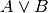
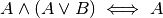
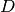

1. Introduction to the Theory of Computation¶
Chapter One of Linz’s text introduces vocabulary and proof techniques. Here I am adding a couple sections on Propositional Logic and Set Theory. It is a good idea to understand sets and logic when studying formal languages and their accepting machine counter-parts. We’ll learn a little logic first and then some set theory.
1.1. Propositional Logic¶
There are problems in life and in theoretical computer science or mathematics where we state that certain facts are true or false. Sometimes a fact’s truth-value implies the truth or falsity of another fact. To deal with true and false facts and their implications, a philosopher named Aristotle developed a formal logic system called propositional logic. In propositional logic we can have the following.
Things that may be true or false are called propositional variables and are usually represented by a capital letter, like A, B, or C.
A propositional expression consists of propositional variables or other propositional expressions joined by one of the propositional operators which are
- which means AND and is called conjunction.
- which means OR and is called disjunction.
- which means NOT
and is called negation.
which means IMPLIES and is called implication. is called the antecedent and is called the conclusion.
- which means IMPLIES and IMPLIES and is called if and only if which is usually abbreviated as iff.
Parentheses and braces may be used to override the precedence of operations. Otherwise, negation has the highest precedence followed by conjunction, then disjunction, and finally implication and iff.
1.1.1. Propositional Logic Operators¶
Now that we have seen how the logical operators are written in propositional logic, we need to understand precisely how they can be used to operate on the logical values true and false. Each logical operator operates on one or two propositional expressions and itself denotes a propositional expression. The table below provides the truth value that results from the truth or falsity of its one or two subexpressions. Consider  and
and  , two propositional expressions with the truth values provided below. This truth-table shows the result of combining these two propostional expressions by using the given operator and with the given truth values.
, two propositional expressions with the truth values provided below. This truth-table shows the result of combining these two propostional expressions by using the given operator and with the given truth values.
|
|
 |  |
|||
|---|---|---|---|---|---|---|
| F | F | T | F | F | T | T |
| F | T | T | T | F | T | F |
| T | F | F | T | F | F | F |
| T | T | F | T | T | T | T |
Using propositional logic we may be asked to prove something is true or false. This can be done in one of two different ways. Either an exhaustive proof may be constructed using a truth-table or you may use logical simplification rules to reduce or simplify a propositional statement to true or false. First we’ll look at truth-tables, then we’ll consider an example where the propositional expression is reduced via these simplification rules.
1.1.2. Proof by Truth-Tables¶
If we are asked to prove a propositional logic expression, often called a sentence, is true or false, we can construct a proof table to show exhaustively that it is true in all circumstances.
For instance, consider this expression.
Prove  .
.
|
|
||||
|---|---|---|---|---|---|
| F | F | T | T | T | T |
| F | T | T | T | T | T |
| T | F | F | F | F | T |
| T | T | F | T | T | T |
The truth-table above proves that is a true statement. Another name for a statement which is always true is a tautology. In this case, it does not matter what truth values are assigned to and .
Take another look at this truth-table. Notice that each column of the truth-table adds just one more logical operator. Also notice that all possible values of true and false are covered for and by starting with two falses and then two trues for and alternating true and false for . If there were three variables in the statement, then there would be four falses followed by four trues for the first variable, then two falses and two trues alternating for the second variable, and finally true/false alternating for the third variable. By using this systematic approach you can be sure to capture all combinations of true and false for a statment. If there are three variables in your statement, then eight rows would be needed in the truth-table. is the number of rows needed in a truth-table to prove that a statement is true or not under all interpretations.
1.1.3. Practice¶
- Use a truth table to prove that
- Use a truth table to prove that . is called the contrapositive of
1.1.4. Equivalence and Inference Rules¶
Another way to prove a statement is true or false is through the use of equivalences and inference rules for propositional logic. The proof in the previous section actually hints at one of these rules. It turns out that not only does but also . In other words  . This double arrow is pronounced, “equivalent” and indicates that the two expressions have the same truth values in all interpretations. Another way to state this is . So, one can replace the other. Here are some of the important equivalences in propositional logic.
. This double arrow is pronounced, “equivalent” and indicates that the two expressions have the same truth values in all interpretations. Another way to state this is . So, one can replace the other. Here are some of the important equivalences in propositional logic.
- , Commutativity
- , Commutativity
- , Associativity
- , Associativity
- , Distribution
- , Distribution
- , Implication
- , Simplification
- , Complementation
- , Complementation
, Idempotent
- , Idempotent
- , Identity
- , Identity
- , Identity
- , Identity
, Double Negation
- , iff for if and only if.
- , DeMorgan’s Law
- . DeMorgan’s Law
- , Addition
- , Absorption
- , Absorption
In proofs we may also use some rules of inference when trying to infer whether a statement is true or false. Here are the rules of inference.
- , modus ponens
- modus tolens
- , resolution
1.1.5. Proof by Derivation¶
We can now prove statements to be true in propositional logic using these equivalence and inference rules. To do this, we start with the original statement and using the rules in the previous section we arrive at the value of true. Using these rules we prove that statements are valid meaning that they are true regardless of the truth values assigned to the individual variables. We call the assignment of variables to truth values an interpretation or a model. We want to prove that a statement is valid which means that it is true in all interpretations. Let’s consider an example to see how a proof can be constructed from these equivalences. Consider proving
Here is the proof. Each line refers to one of the equivalences above which was used in simplifying it from the previous step.
- We start with what we want to prove,
- , by (7)
- , by (19)
- , by (7)
- , by (26) and (1)
- , by (6) and (1)
- , by a generalization of (4)
- , by (8), (1), and (2)
- , by (22) and (1)
- , by (7)
- , by (10)
The proof above deserves some comments to describe how it was done. There are a large number of provided equivalences and inference rules, so just how did we decide which ones to use? First, you must remember the rules of precedence to correctly understand what is being asked.
- Implication has the lowest precedence.
- This is followed by disjunction, or the or operator.
- Next, is the conjunction or and operator.
- Finally, the negation operator has the highest precedence.
In the statement above the last implication operator is the top-level logical operator. So we are trying to prove that everything on the left implies .
Next, we went about removing implication so that we ended up with a conjunction of disjunctions with negation on individual variables in the antecedent. A conjunction of disjunctions with negation on individual variables is called conjunctive normal form. Every propositional logic expression can be reduced to conjunctive normal form. That is what the term normal form means. Every expression can be reduced to a normal form if a normal form exists for a language. In conjunctive normal form we end up with a series of disjunctions all anded together. In this proof we only reduced the antecedent to conjunctive normal form. We didn’t bother reducing the entire statement to conjunctive normal form right away.
Finally, resolution (i.e. rule 26) was used to eliminate some variables while simplification and absorption eliminated others. DeMorgan’s law was useful in moving the negation down to the individual propositional variables.
When we reach the final value of true we have proved that the propositional statement is true no matter what truth-values are applied to the individual variables. In other words, the statement is valid or a tautology. It is true independent of any assignment of true and false to the propositional variables. The final box at the end states that the proof is complete.
1.1.6. Proof by Contradiction¶
Another means of proving something is called a proof by contradiction. To prove by contradiction we start by assuming that the statement is false. Then we try to prove that we arrive at a contradiction where a propositional variable must be both true and false at the same time in some interpretation of the propositional variables.
Consider the example that we just proved was true. Let’s prove it by contradiction instead. So, we’ll assume that the statement is false. Then we’ll show that we arrive at a contradiction.
- We start with the negated statement,
, by (7)
- , by (19)
- , generalization of (4)
- , by (21)
- , by (2) and (24)
- , by (24)
- , by (9)
Since we arrived at false, that says that or original statement was false and therefore the negation of it, the thing we assumed was false in our proof by contradiction, was actually true.
In general, when proving something by contradiction you make an assumption that you believe to be false, then you go about showing that it is indeed false. Then the opposite of what you first assumed is actually true. This type of proof can be especially useful since you only have to find one counter-example to be able to conclude that your assumption could not be true and conclude that what you originally wanted to prove is true. In the next section we’ll do another proof by contradiction.
1.1.7. Other Proof techniques¶
Read pages 10-13 for more about proofs including induction and another example of proof by contradiction.
1.1.8. Exercises¶
These exercises help you practice using the concepts that were covered in this section.
Construct a truth-table to prove the following tautologies are valid.
Prove the following are true in any interpretation using the equivalence and inference rules in this section. Be sure to use one and only one rule per line in your proof (with the exception of rules 1-4) and include the rule number of each rule you used in your proof with the line where it was used as shown in the examples in the text.
1.2. Sets¶
Fig. 1: A Subset and a Superset
This section supplements material found in the short section 1.1 of Linz’s text. You should read through that material on pages 3-6 if the fifth edition. Then supplement it with the material written here.
A set is a collection of items. There are very few restrictions on sets. They do not need to contain the same type of items. The order that the items are written in a set does not matter. So the set {1,2,3,4} is the same as the set {2,1,4,3}. In fact, a set does not need to contain any items. In this case it would be the empty set. A set may contain a finite number of items, or elements, or an infinite number of elements. The set of cars you have owned in your life is a finite set. It may even be the empty set right now. The set of integers is an infinite set.
A subset is also a set but describes a relationship between two sets. The set A is a subset of B if every element in A is also in B. We can write this mathematically as follows.
The symbol denotes subset containment. The potentially smaller set, , is written on the left while the potentially bigger set, , is written on the right. The line below the horseshoe indicates that the two sets may be equal in size, in which case they would denote the same set. This is much the same as writing the  symbol to denote a number that may be less than or equal to another in an ordering of the numbers. A subset that is not equal to its superset is called a proper subset which is written as follows.
symbol to denote a number that may be less than or equal to another in an ordering of the numbers. A subset that is not equal to its superset is called a proper subset which is written as follows.
This is read as is a proper subset of if and only if for all  in , is also in and there exists at least one
in , is also in and there exists at least one  that is in such that is not in . Figure 1 depicts as a proper subset of .
that is in such that is not in . Figure 1 depicts as a proper subset of .
Fig. 2: A Set Diagram
The picture of figure 1 is that of a Venn Diagram. Venn diagrams were first introduced by John Venn around 1880 to describe mathematical sets. The universe is typically not labelled but denotes the entire world of items that potentially might be a part of some set. Typically there are items that are not part of any set that we might be interested in describing. The area inside a circle denotes the items of that set. Since sets may overlap they may be drawn on top of each other or overlapping some part of the two sets.
Figure 2 denotes two sets that overlap a little bit but not completely. The (American) football shaped area (i.e. region 4) that the two sets share is the intersection of the two sets. The intersection of two sets are those items that are present in both sets. The union of two sets are the items that are a part of either set. Regions 2, 3, and 4 of the Venn diagram in figure 2 are the union of sets A and B. The complement of a particular set are those items that are not inside the set. Regions 1 and 3 make up the complement of set A in figure 2. Complement, union, and intersection each have their own set operators as shown in this table. In addition, some common set operations are detailed there as well.
Operator Name Symbolic Representation Description Subset True if Proper Subset True if Superset True if Proper Superset True if Union Regions 2,3,4 of figure 2 Intersection Region 4 of figure 2 Complement Regions 1,3 of figure 2 Set Difference Region 2 of figure 2 Set Addition Regions 2,3,4 (same as union) Set Cardinality denoted by Number of items in Set Membership True if Symmetric Difference Same as Cross Product Constructs a new set. Described below. Power Set Constructs a new set. Described below. Empty Set The set with no items. Sometimes denoted {}.


The cross product of two sets is a new set that consists of all the pairs of items from the two constituent sets. Consider set A = {1,2,3,4} and B = {“hi”, “there”}. Then A X B = {(1,”hi”), (2,”hi”), (3,”hi”), (4,”hi”), (1,”there”), (2,”there”), (3,”there”), (4,”there”)}. From this description it should be clear that the cardinality of any finite cross product is .
The power set of a set is the set of all subsets. So is the set of all subsets of A. If A={1,2,3,4}, then
= { , {1}, {2}, {3}, {4}, {1,2}, {1,3}, {1,4}, {2,3}, {2,4}, {3,4}, {1,2,3}, {1,2,4}, {1,3,4}, {2,3,4}, {1,2,3,4}}
For a finite set, the cardinality of its powerset can be computed as . Notice that the empty set is always a member of any power set.
Sets come into play in many algorithms in Computer Science. Because of their importance, sets have been implemented in pretty much all programming languages. For instance, Python has an implementation of the set datatype. In fact, there are two implementations of sets within Python, the frozenset and the set datatypes. The frozenset implementation provides an immutable set type. Immutable datatypes are values that once created cannot be changed. Mutable datatypes can be altered (i.e. mutated) after they are created. The set datatype is mutable. You can read about the methods supported by these datatypes on the help webpage linked above. The operations supported by these datatype mirror the operations outlined in the table in this section.
Both the set and frozenset datatypes of Python implement the set membership test in O(1) time complexity meaning they can look to see if an item is in a set in a constant amount of time, independent of the set’s size. Other set operations are dependent on the size of the set or sets involved in the operation. Sets are commonly implemented using a hash table which means that the items of a set must be hashable. Most data items in Python are hashable. If you wish to implement your own hashing function for a class you implement the __hash__ method. It must return a evenly distributed integer value as its result.
1.2.1. Exercises¶
Complete the following exercises involving sets.
- Provide the region numbers of the Venn diagram from fig. 2 that are included in the set .
- Provide the region numbers of the Venn diagram from fig. 2 that are included in the set .
- If and , then what are the items of the set ?
- If and and the universe is the set of all lowercase letters, then what are the items of the set ?
- Assume . What is ? Provide the contents of the set.
- Consider the set . Let . In this case would be . What is ? Provide a formula for computing for any finite set.
1.2.2. Infinite Sets¶
The content provided here may be supplemented by this excellent crash course provided by Peter Suber.
Some sets are infinite in size. For example, the set of integers, denoted by  , is an infinite set. We can count the items in that set, but we would never finish of course, so trying to determine its cardinality by counting would be futile. However, we can say that the set is countably infinite if we can find a method, called an enumeration, of counting all the integers. But, the integers contain both negative and positive numbers. How would we provide a method of counting them?
, is an infinite set. We can count the items in that set, but we would never finish of course, so trying to determine its cardinality by counting would be futile. However, we can say that the set is countably infinite if we can find a method, called an enumeration, of counting all the integers. But, the integers contain both negative and positive numbers. How would we provide a method of counting them?
It turns out we can provide that enumeration if we start at 0. Here is the enumeration that proves that the integers are countably infinite in size.
0, -1, 1, -2, 2, -3, 3, -4, 4, …
By counting in this way we would be able to enumerate all integers given an infinite amount of time. So, now we know that while some sets are infinite, at least some of these infinite sets are countable. An infinite set that is countable is called a denumerable set.
But, we have operators that we can use to construct new sets. What about where  is the set of natural numbers. The natural numbers are the set of non-negative integers. Is a denumerable set? Clearly it is infinite, but can we come up with an enumeration that would let us count all the elements of ?
is the set of natural numbers. The natural numbers are the set of non-negative integers. Is a denumerable set? Clearly it is infinite, but can we come up with an enumeration that would let us count all the elements of ?
The proof that is countably infinite, or denumerable, is a little trickier. The proof relies on constructing a two-dimensional, infinite, grid as shown here.
0 1 2 3 4 5 etc 0 (0,0) (0,1) (0,2) (0,3) (0,4) (0,5) etc 1 (1,0) (1,1) (1,2) (1,3) (1,4) (1,5) etc 2 (2,0) (2,1) (2,2) (2,3) (2,4) (2,5) etc 3 (3,0) (3,1) (3,2) (3,3) (3,4) (3,5) etc 4 (4,0) (4,1) (4,2) (4,3) (4,4) (4,5) etc 5 (5,0) (5,1) (5,2) (5,3) (5,4) (5,5) etc etc etc etc etc etc etc etc etc
Now, the problem is reduced to finding an enumeration that would eventually count all of them. We can’t proceed down a row or we would never get to the next row. Same with columns. We can’t proceed down a column or we would never get to the next one. So, we count the only way we can, by proceeding on diagonals that have a beginning and an end. Our enumeration proceeds as follows.
(0,0), (1,0), (0,1), (2,0), (1,1), (0,2), (3,0), (2,1), (1,2), (0,3), (4,0), (3,1), (2,2), (1,3), (0,4), …
In this way we would eventually enumerate all the elements of . So, the cross product of any denumerable set is also denumerable. Weird things begin to happen when you consider infinite sets. We can construct a function that will take any natural number, 0, 1, 2, 3, …, and give us a corresponding element from our enumeration of the integers. Here is that function:
Likewise, we can construct a function that will take any integer and give us a corresponding natural number. Any non-negative integer will map to a corresponding even natural number, while any negative integer would map to an odd natural number. The definition of this second function proves that the set of integers is no bigger than the set of natural numbers. If the set of integers were bigger, then there would be some integer that didn’t have a corresponding natural number. But the function definition shows us that every integer has a corresponding natural number.
The previous function shows us that every natural number has a corresponding integer. This is the converse of the argument that every integer has a corresponding natural number. With these two functions the set of integers and the set of natural numbers are put in one-to-one correspondence to each other. This is usually written as  . What we just proved is that the integers and the naturals are the same size set. It turns out that the cross product of the natural numbers is the same size set as well. They are all denumerable or countably infinite. The integers, naturals, and cross-product of the naturals have exactly the same size.
. What we just proved is that the integers and the naturals are the same size set. It turns out that the cross product of the natural numbers is the same size set as well. They are all denumerable or countably infinite. The integers, naturals, and cross-product of the naturals have exactly the same size.
This goes against intuitive thinking. It just doesn’t seem that a set like the integers can be the same size as the set of naturals since the naturals only have 1/2 the integers as part of them. But, we are dealing with sets of infinite size and that means that intuition is not always right.
Then what about the set of real numbers? Are they countably infinite? Intuition would say that they are not, but is intuition trust-worthy when dealing with infinite sets? It turns out that the real numbers are not countably infinite. Here is the proof. It is a classic proof by contradiction.
Are the real numbers countably infinite?
Proof:
Assume that the reals were countably infinite. Then there must be some enumeration of all the real numbers. We’ll line all the numbers up in a list. To keep things simple, we’ll consider only the numbers between 0 and 1.
Now we’ll construct a new number that is not in that list of all numbers between 0 and 1. We’ll start with “0.” and construct the numbers after the decimal point.
Look at the first number in our list of numbers. We’ll pick the first digit of our new number that does not equal the first digit after the decimal point of the first number in our enumeration. Then, we pick the second digit of our new number that does not match the digit of the second number in our enumeration. We continue in this fashion infinitely picking the next digit in our number as we proceed. To see how this works, consider this example enumeration.
- etc.
So, in this example our new number looks something like . Clearly there are lots of choices for the digits of this number. This new number that we just built cannot be in our enumeration of all the real numbers between 1 and 0, yet it is a number between 1 and 0. It cannot be the first number, because it differs in the first digit after the decimal point from that number. It cannot be the second number because it differs from it in the second digit after the decimal point. This same argument applies to all digits in the newly constructed real number.
So our assumption that the real numbers between 0 and 1 was countably infinite must be wrong. Therefore, the numbers between 0 and 1 are uncountably infinite. And, since the real numbers are clearly a superset of the real numbers between 0 and 1, the real numbers are uncountably infinite as well.
So, the real numbers are uncountably infinite. Are there other sets that are uncountably infinite? Yes, it turns out that is an uncountably infinite set if is countably infinite. The cardinality of the set of reals is the same as the cardinality of the power set of a countably infinite set.
It turns out the cardinality of the interval (0, 1), the cardinality of the real numbers, and the cardinality of the power set of any denumerable set are all the same. They are all uncountable and their cardinality is denoted as where represents the naturals.
1.2.3. Exercises¶
Provide answers for the following exercises.
- Prove that the set of Rational numbers is denumerable. Don’t look this up on the internet. Try it for yourself to see if you can come up with the proper argument.
- For any uncountably infinite set, can you come up with a set that would have greater cardinality? Again, try to do this without the internet. You have enough information here to find your answer.
- Prove that removing one element from a denumerable set still results in a denumerable set.
- Prove that the set of odd natural numbers is denumerable by putting them in 1-1 correspondence with another denumerable set.
- Prove that the set of all finite length strings of 0 and 1 is denumerable.
- Prove that the set of all finite length strings of 0 is denumerable.
- Prove that the union of two denumerable sets is still denumerable.
- Prove that the set of irrational numbers is uncountable. The irrational numbers are those numbers that cannot be represented as A/B where A and B are integers.
1.3. Functions and Relations¶
See pages 6-8 of Linz’s text, fifth edition.
1.4. Graphs and Trees¶
See pages 8-10 of Linz’s text, fifth edition.
1.5. Three Basic Concepts¶
Read pages 16-27 of chapter 1, fifth edition on the three basic concepts of languages, grammars, and automata.